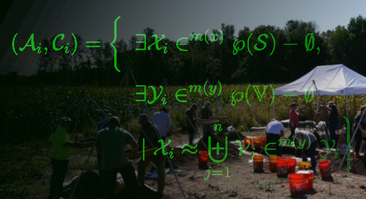
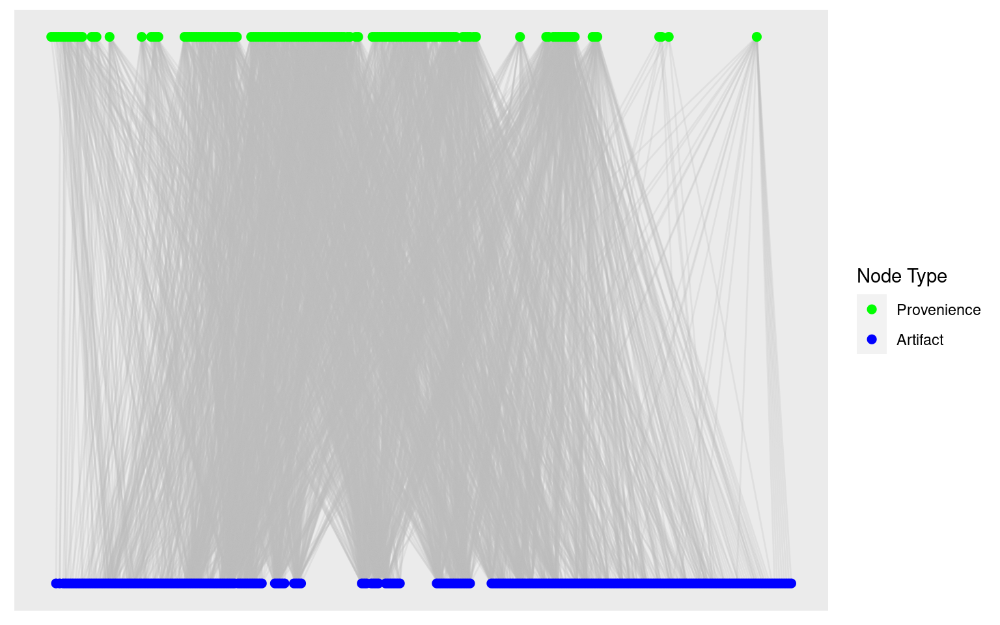

require(tidyverse)
require(igraph)
require(ggraph)
# Read in edgelist into data frame
dat <- read_csv("Catalog_SiteA.csv",
col_select = c(LEVEL_ID, CODE))
# Create graph
g_assemblages_bpg <-
graph_from_data_frame(unique.data.frame(dat),
directed = FALSE)
# Assign bipartite node types
V(g_assemblages_bpg)$type <-
bipartite_mapping(g_assemblages_bpg)$typeSimilarity Measures for Graph Adjacency with Sets

In my last installment (Part I), I introduced you to a bit about the process of analyzing an archaeological site with data science. I talked about the frustratingly complex nature of “Old Things in Space” and how the network of artifacts and locations constitute a bipartite graph.
As we worked through the process of creating a two-mode graph and projecting it into its constituent one-mode graphs, however, we ended on something of a cliff-hanger… everything ended up connected to everything else!
Well, sort of. I have to confess that I intentionally lead you down a primrose path straight into a carefully crafted cul-de-sac. All part of my cunning plan, of course, to get to the much more interesting topic of thinking about just what it means for two things to be “similar” and similarity metrics for sets.
In my defense, I did briefly mention that igraph doesn’t really have the best of tools to actually do much of anything interesting with bipartite graphs. The problem is that the method it uses in its bipartite_projection simply sums the pairwise occurrences in the incidence matrix. That, as it turns out, is less than useful in a lot of cases.
Instead, we need to explore some more robust methods for evaluating similarity between sets. Unlike numerical methods of calculating correlation or distance, there are some conceptual peculiarities when comparing correspondence and similarity between sets that need to be considered. In this article, we’ll look at some of the most commonly used set-based similarity metrics and reason through how to choose the appropriate metric for our goals.
For those just joining in, this is the Part II of a series in archaeological data science covering:
Part I – Creating and exploring bipartite and one-mode graphs,
Part II – Similarity measures for sets and graph adjacency,
Part III – Graph structure and community detection methods,
Part IV – Geo-spatial networks
I’ll continue using R for the coding, but again all of this could be done with Python just as easily.
Introduction
Before we get into the weeds of metrics, methods, and combinatorics (i.e., the mathematics of sets) let’s stop to think for a moment about just what we mean when we say that two things are similar.
In general, we refer to things as similar when they are neither the quite the same nor are they entirely different. Similar things are alike-ish. It means that some measure of shared features or attributes is suggesting association but not necessarily commonality or identity. It denotes a resemblance or correspondence, but there’s a certain fuzziness about it – i.e., similarity implies a subjective or qualitative assessment.
Our goal, then, is twofold. Firstly, we need to determine what set similarity metric most closely reflects the relationship between set elements. Secondly, we have to determine an appropriate method for determining the threshold of similarity between those entities. In other words, we need to choose our criteria for resemblance and set the limits of what is (or isn’t) considered similar between our sets.
Sets and Similarity
Unlike real-valued vector spaces in which distance or similarity can be readily calculated, sets consist of an un-ordered collection of unique members or elements. Those member elements can be anything – e.g., numbers, letters, words, objects, categories – so there isn’t always an obvious numerical solution such as vector norms or coordinates that can be used for comparison of elements.
Instead, we have to compare the membership of elements between sets. More specifically, we compare the size or cardinality of certain attributes of or operation on the sets such as their intersections and unions. Luckily, there are numerous metrics available for comparing similarity between sets. For our purposes, I will discuss only a few that are most common:
- Overlap or Szymkiewicz-Simpson coefficient
- Jaccard similarity coefficient (a.k.a. Tanimoto coefficient)
- Sørensen–Dice coefficient
Each of these similarity measures was derived specifically to address the peculiarities of dealing with sets. The difference between them is just the way in which they weight common elements (i.e., intersections) against differences.
It is important to consider, however, exactly what relationships between sets you are trying to capture before choosing a method. If your samples all contain approximately the same number of elements, you might choose differently than if each sample has widely different numbers of members. How likely are complete subsets, and are those important to capture? Are differences more important than commonalities, or the other way around?
As with any data analysis, it’s necessary to explicitly consider your methodology as well as your methods. The rationale and justification for the selection of methods is a critical part of the process. That is, after all, why we call it data science.
Bipartite Projections by Similarity
First, lets go back and recreate our bipartite graph of sampling locations (called “proveniences”) and artifact types found at those locations like we did in Part I.
Again, we have our graph of connections between artifact types and locations, and can already see some rough grouping in each of the vertex types (one type at the top and one at the bottom of the plot). The graph is densely connected, with many nodes and edges.
# Plot bipartite graph
g_assemblages_bpg %>%
ggraph(layout = "bipartite") +
geom_edge_link(color = "gray", alpha = 0.25) +
geom_node_point(aes(color = type), size = 2) +
scale_color_manual(
values = c("green", "blue"),
name = "Node Type",
breaks = c(FALSE, TRUE),
labels = c("Provenience", "Artifact")
)
Now we retrieve the binary incidence matrix of proveniences and artifact types from the graph, which we will use as the data for our similarity measures. Remember, we are only considering presence (1) or absence (0) of an artifact type at each provenience.
g_assemblages_bpg_inc <- as_incidence_matrix(g_assemblages_bpg)
# View the first few rows and columns
g_assemblages_bpg_inc[1:5, 1:15] UDB TOOT CS OCH BNUT UIS TWN UWN MCN UCN CWN BLT CAP SCR TACK
1726 1 1 1 0 1 1 0 1 1 1 1 1 0 1 1
1725 1 1 0 1 0 1 1 0 1 1 0 0 1 0 1
1306 0 0 0 1 0 1 0 1 1 1 1 0 0 0 1
1307 0 0 0 1 0 1 0 0 0 0 1 0 0 0 0
1737 1 0 0 0 1 1 0 0 1 1 1 1 0 1 0Depending on which way we view our incidence matrix, we now have a collection of the sets of artifact types found at each provenience (by row) or sets of proveniences at which each artifact type was found (by column).
The goal is to find a partitioning of this system of sets such that each subset of provenience contains a coherent collection of artifact types (i.e., what archaeologists call an assemblage) and each subset of artifact types are found together in a coherent spatial collection of proveniences (we call those a context).
What we’re trying to do in this article is to look at the ways we compute that “coherence” within the projected modes of our bipartite graph. In order to project our bipartite node types into two separate one-mode graphs, we want to evaluate similarity measures between pairwise comparisons of these sets.